Know what things cost, anywhere.
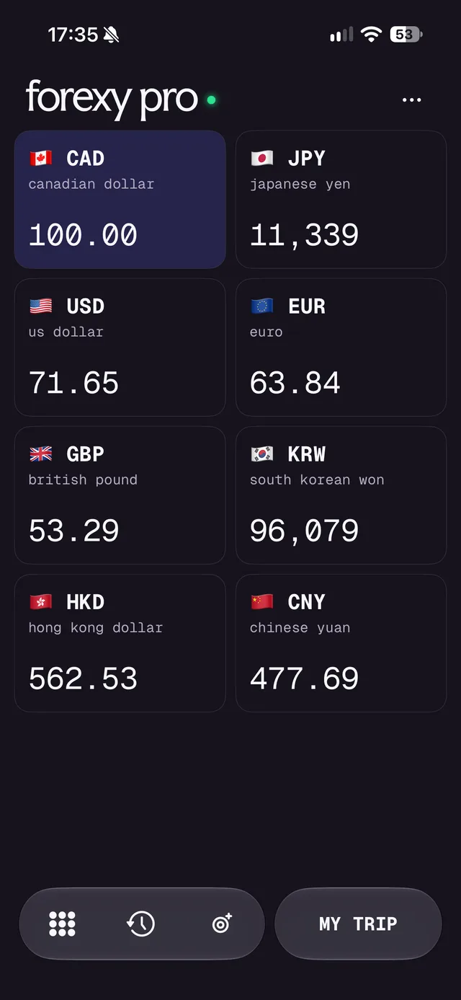
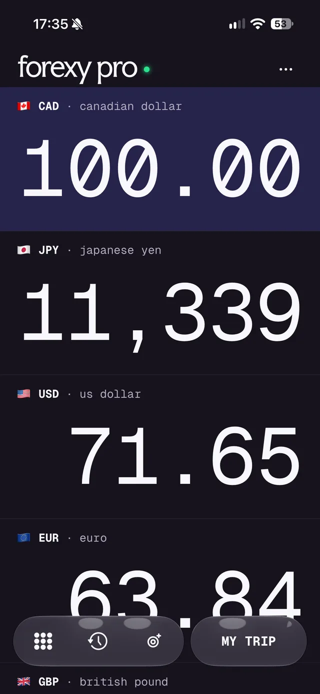
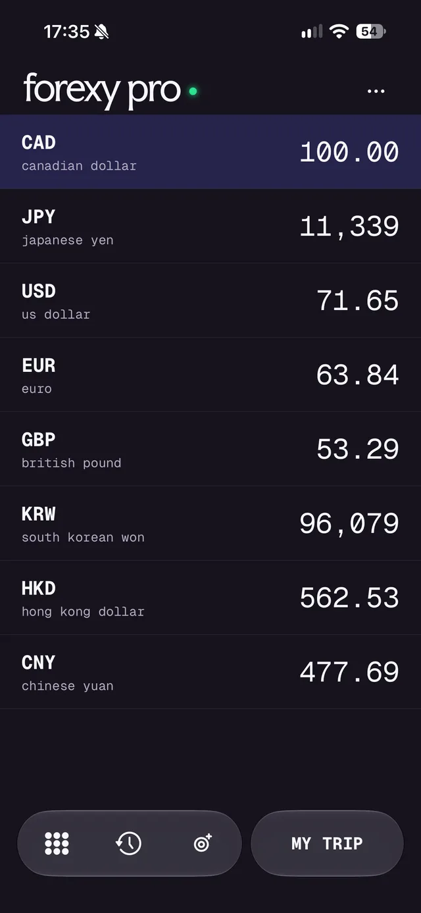
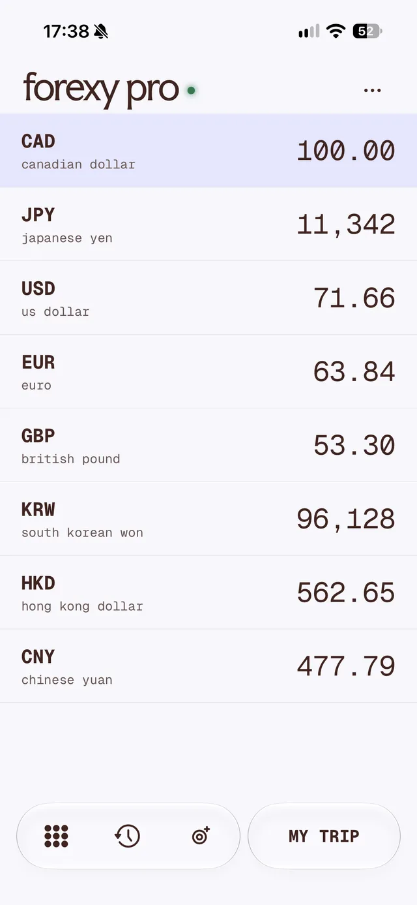
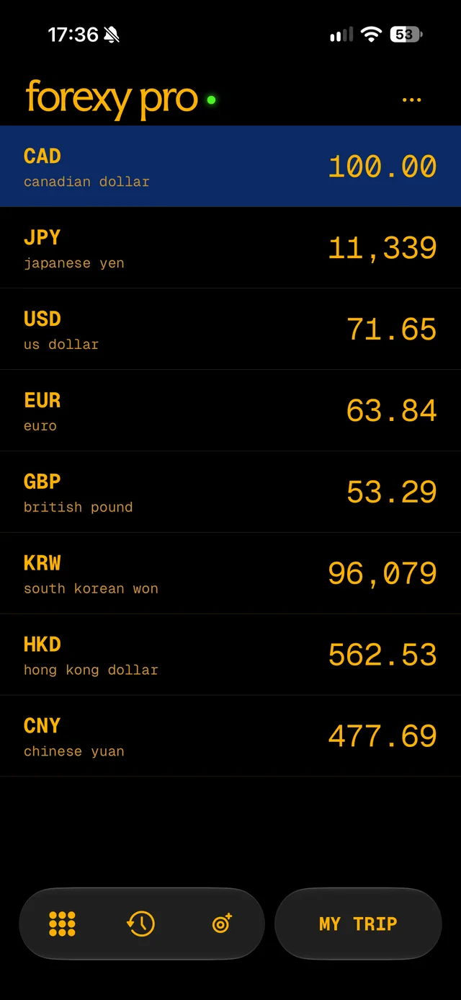
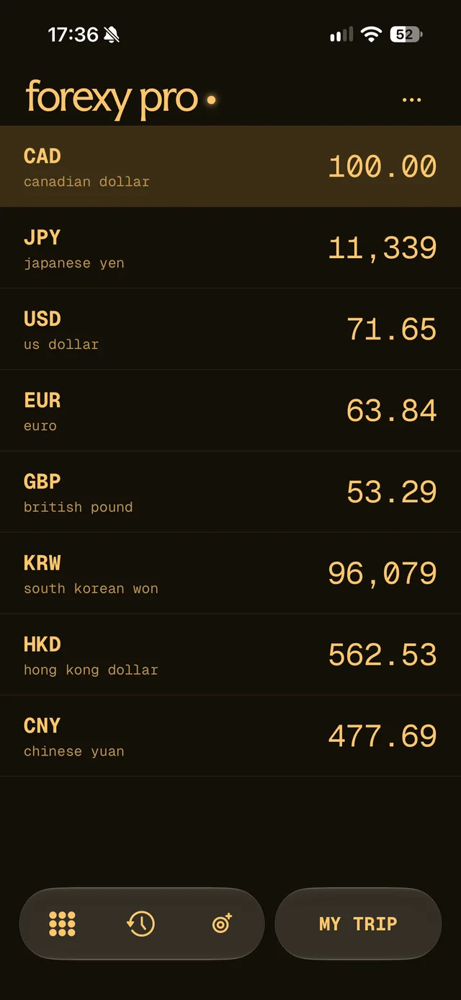
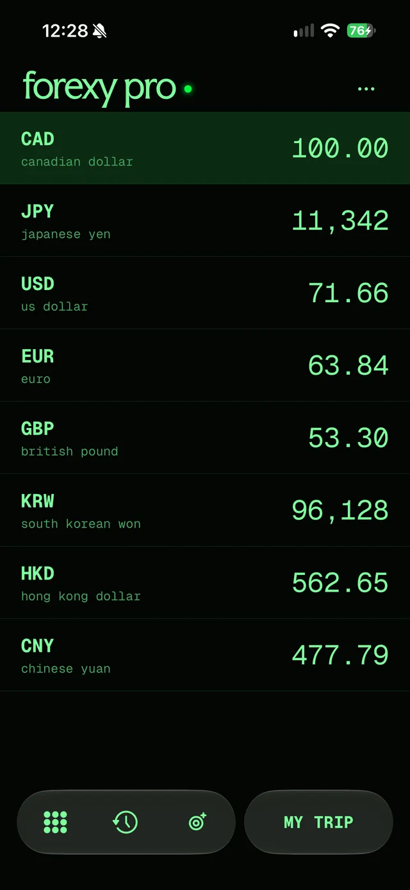
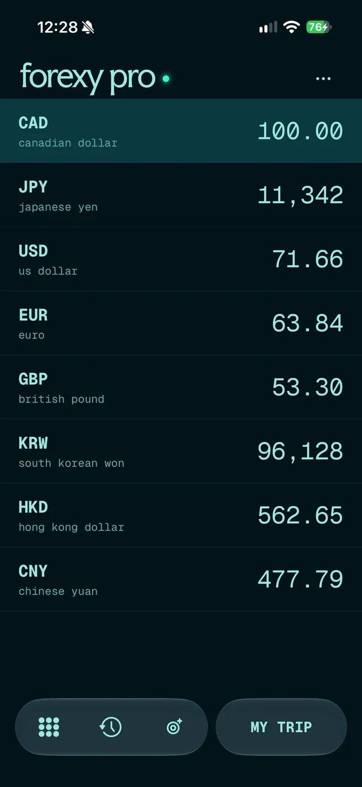
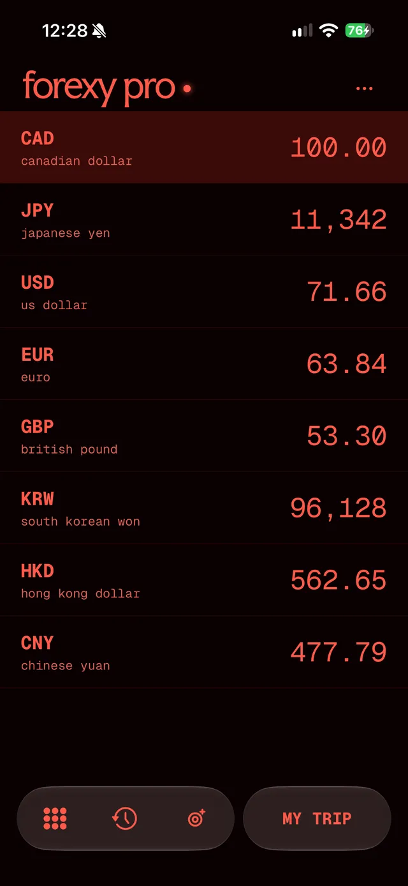
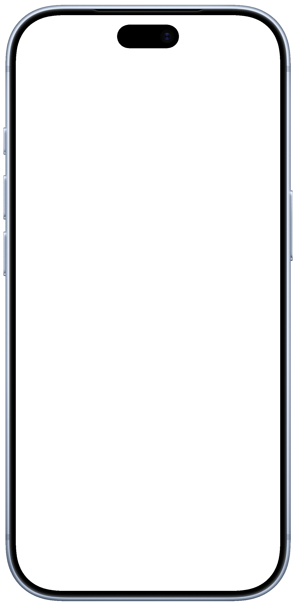
Punch in a number.
Every currency you need, no more, no less.
Built for travelers.
Spotty signal? Conversions still work offline.
Is ¥400 a good deal?
Go beyond the conversion.
Tip like a local.
Get it right without having to ask.
Make it yours.
List, Grid or Big.
Useful isn't boring.
Light, dark, or something louder.
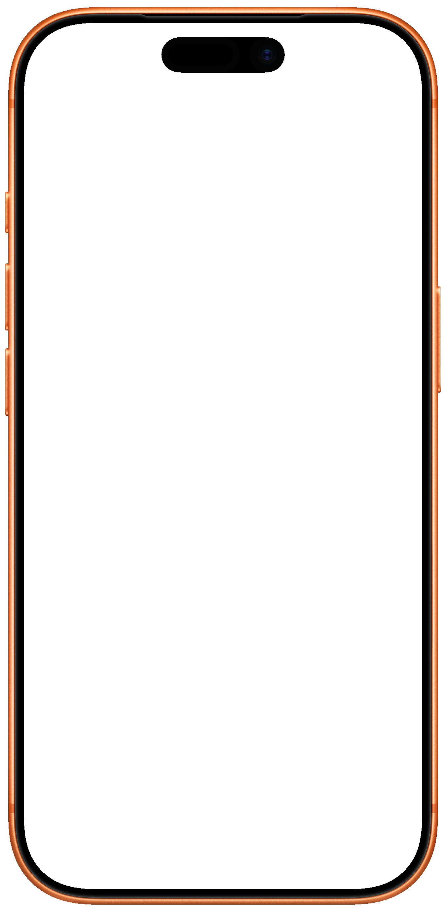
2B+snaps
#1US App Store
$42Mraised
1.5M+users
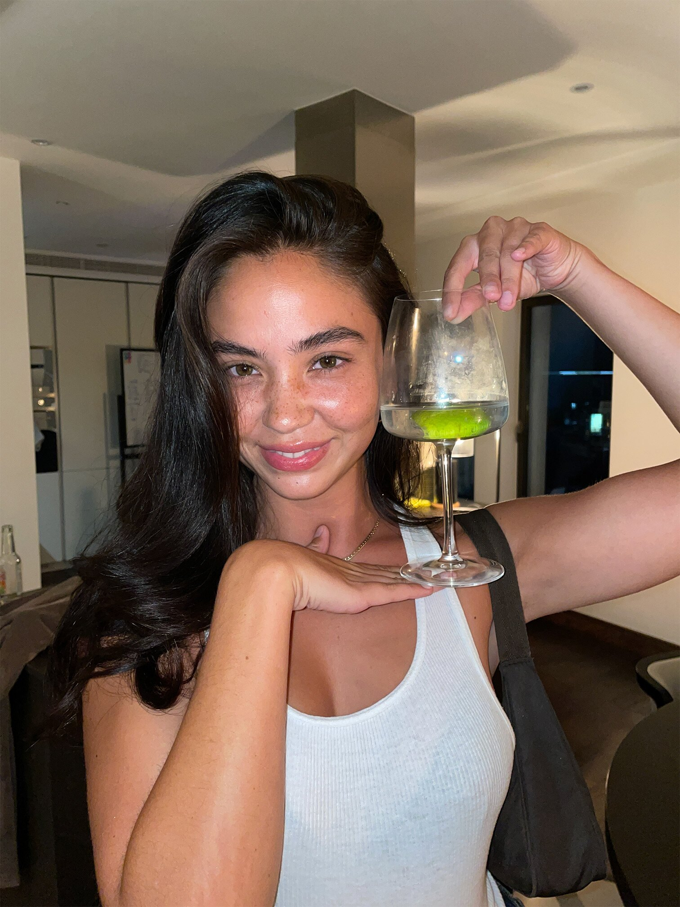
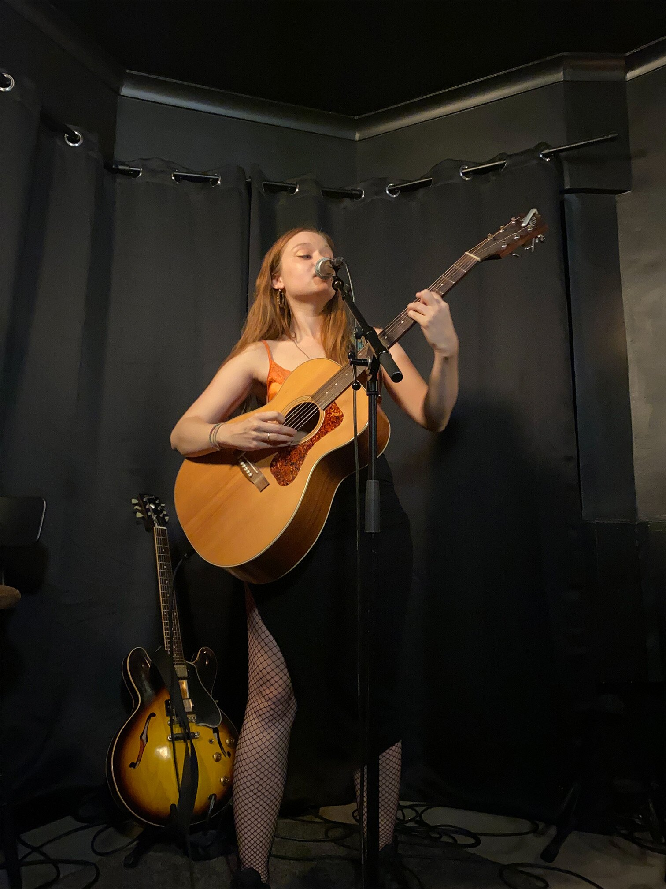
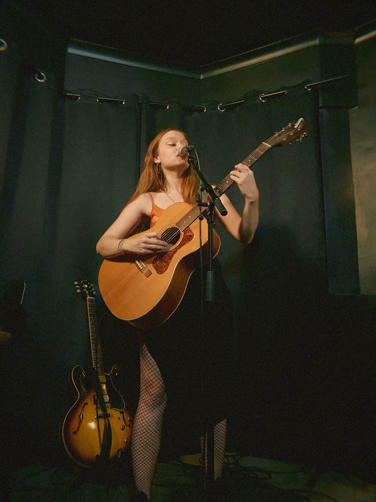
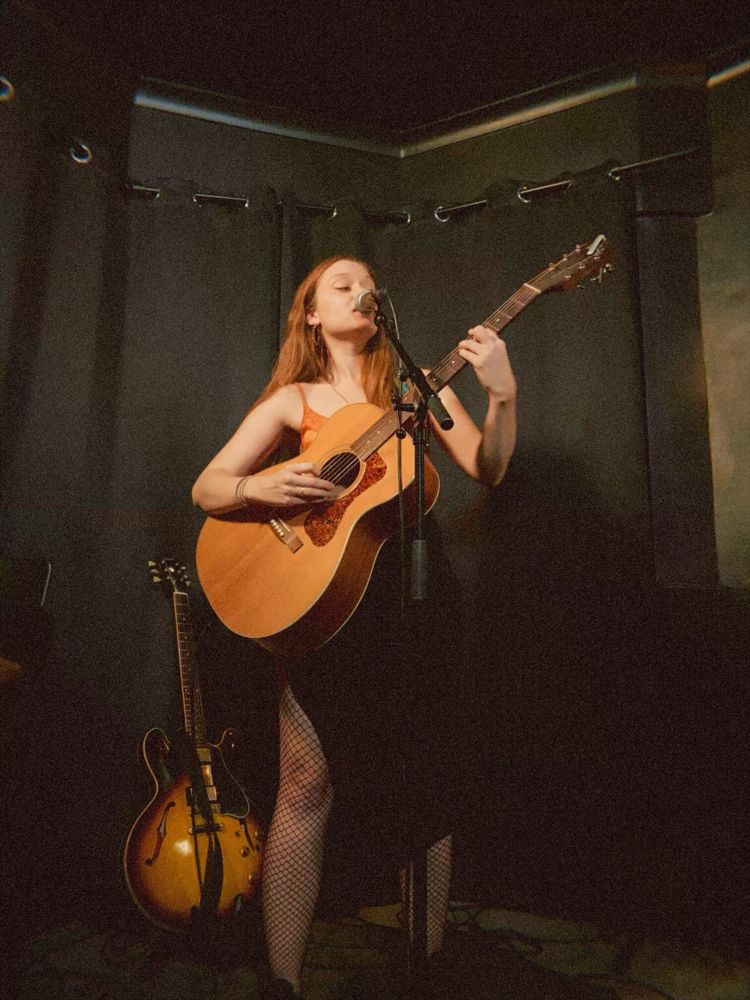
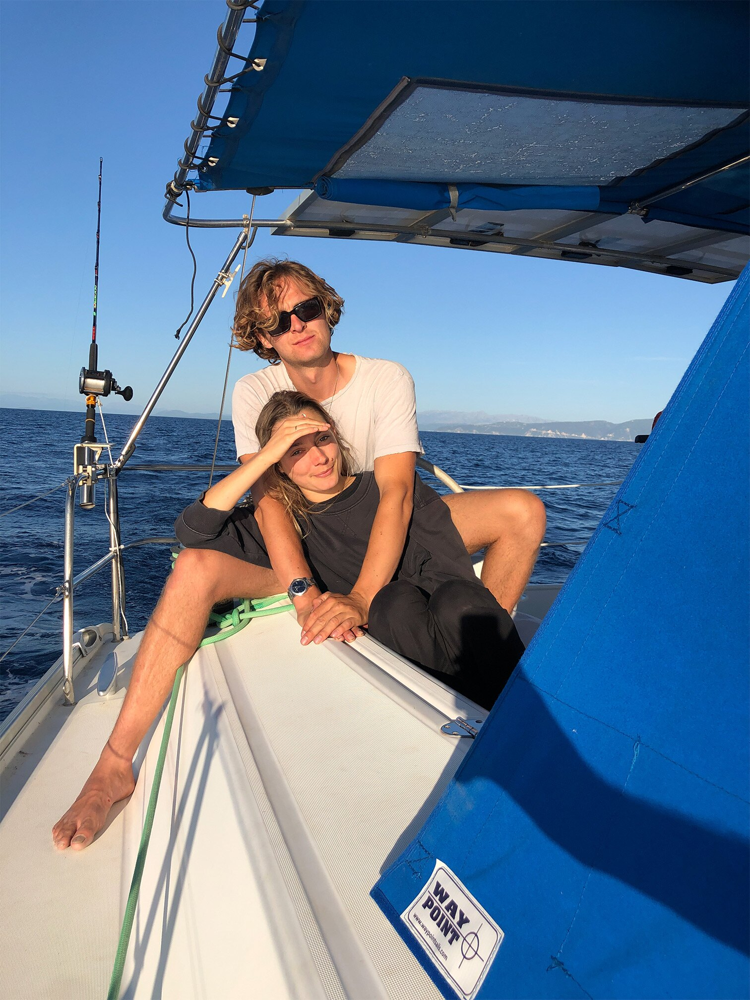
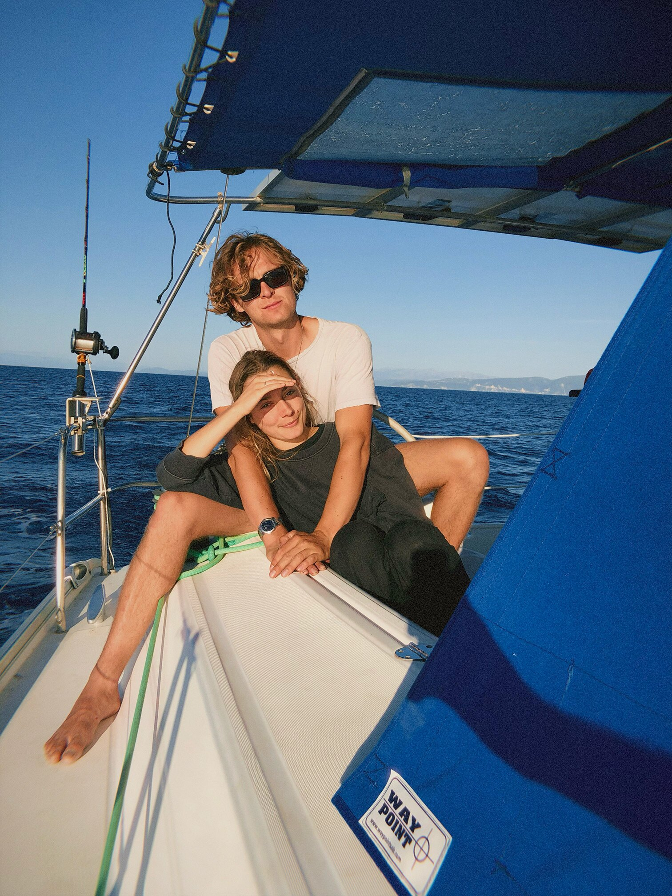
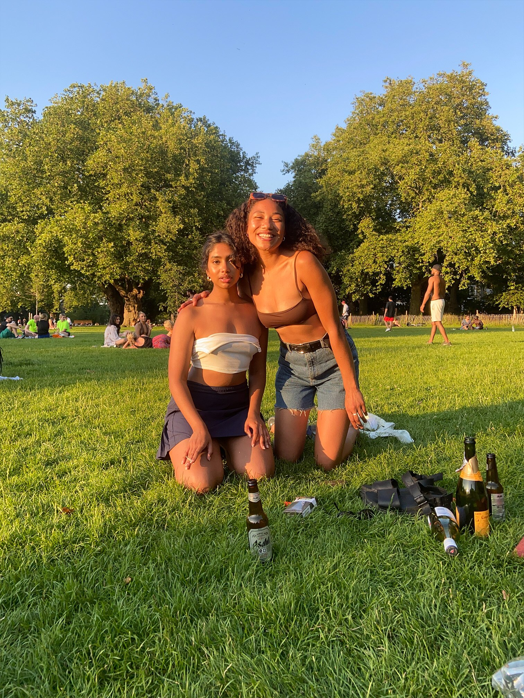
afterbefore · hold to see original
Bringing a procedural film camera to anyone with an iPhone.
Lapse is the social disposable camera app that makes sharing personal again.
As a founding member and Head of Camera, I led the design and development of a proprietary iOS image pipeline, while contributing to product vision, creative direction, marketing, and social strategy.
2B+ snaps taken and loved using Lapse.